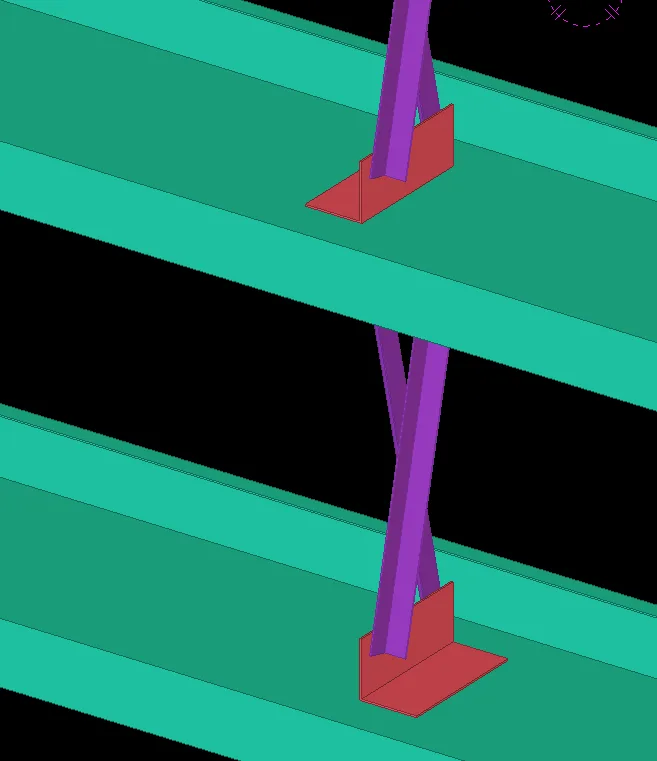
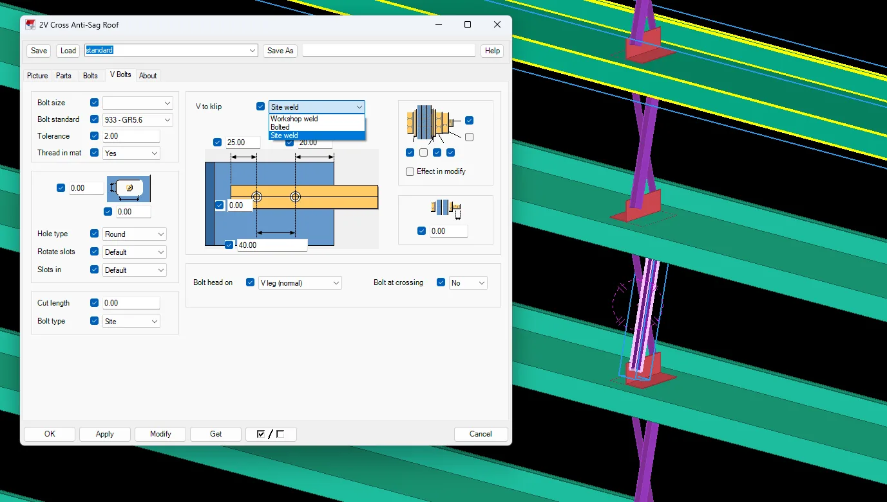
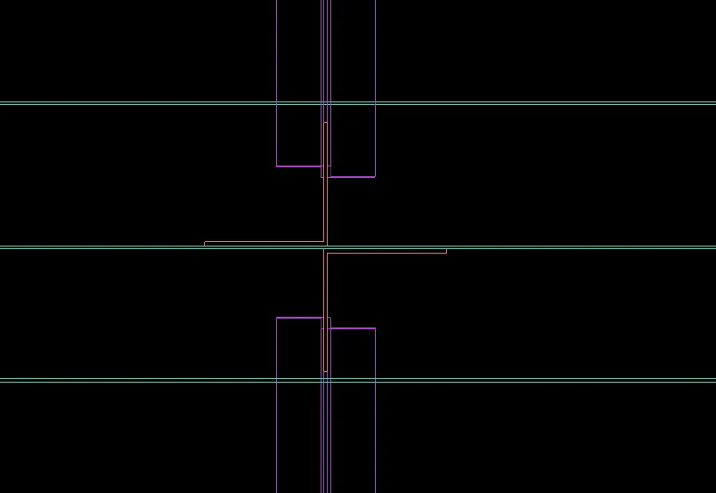
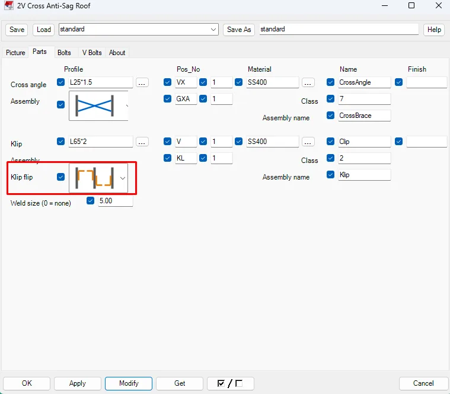
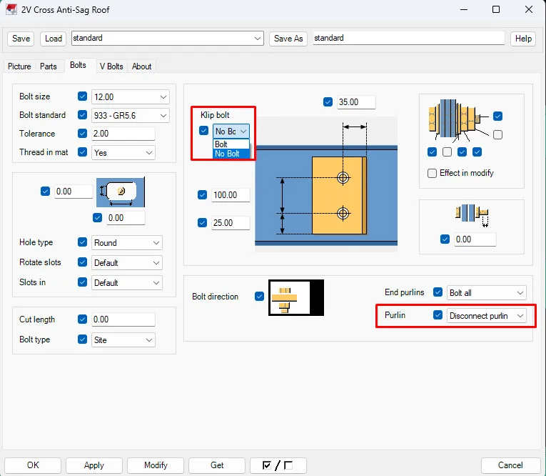

2V Cross Anti-Sag Roof 1.52 — Site weld và Klip flip
Bản 1.52 thêm hai chức năng: Site weld để cấp rời thanh giằng và klip ra công trường rồi liên kết tại công trường, và Klip flip để lật đối xứng klip xen kẽ giữa các khoang xà gồ, hợp với thực tế bắn vít.
Tóm tắt nhanh
- Site weld (tab V Bolts, ô V to klip): thanh giằng và klip mỗi loại một assembly riêng, mối hàn đánh dấu là hàn công trường.
- Klip flip (tab Parts): klip lật đối xứng giữa các khoang xà gồ liền kề, hai klip hai bên một bụng xà gồ không trùng vị trí bắn vít.
- Klip bolt (tab Bolts): chọn Bolt hoặc No Bolt để tạo hoặc không tạo bu-lông và lỗ klip - xà gồ.

1. Site weld: cấp rời thanh giằng và klip
Ô V to klip ở tab V Bolts trước đây chỉ có Welded và Bolted. Nay có ba lựa chọn:
- Workshop weld: hàn xưởng, như trước (chỉ đổi tên cho rõ).
- Bolted: bắt bu-lông vào chân đứng klip.
- Site weld (mới): thanh giằng và klip gửi riêng ra công trường rồi liên kết (bắt vít hoặc hàn) tại công trường.

Khi chọn Site weld:
- Mối hàn được đánh dấu là hàn công trường, không phải hàn xưởng. Cỡ mối hàn lấy từ ô Weld size ở tab Parts.
- Thanh giằng và klip không còn gom chung một assembly. Thanh giằng theo ô Assembly của dòng Cross angle (ví dụ GXA / CrossBrace), klip theo ô Assembly của dòng Klip (ví dụ KL / Klip); mỗi loại có Prefix và Name Assembly riêng, cài ở tab Parts.
Với Workshop weld, thanh giằng và hai klip của mỗi nhịp vẫn là một assembly chung, hàn sẵn ở xưởng. Model cũ tự đọc đúng, giá trị cũ giữ nguyên nghĩa.
2. Klip flip: lật đối xứng klip xen kẽ giữa các khoang
Ô Klip flip ở tab Parts (combo có hình Normal / Flipped) lật đối xứng klip xen kẽ giữa các khoang xà gồ: các klip trong cùng một khoang giữ cùng chiều, khoang liền kề lật đối xứng.
Mục đích là hợp với thực tế thi công khi bắn vít. Hai klip hai bên một bụng xà gồ nằm so le, chân nằm của hai klip chìa ngược chiều nhau và mỗi klip có nhóm bu-lông, lỗ riêng nên không bị trùng vị trí bắn vít.


- Thanh giằng chữ X, bu-lông V và mối hàn vẫn bám đúng mặt chân đứng klip.
- Sau khi lật, thanh giằng, klip và assembly của các khoang cùng khoảng cách vẫn đánh số giống nhau (đã kiểm bằng đánh số Tekla thật).
3. Klip bolt: Bolt hoặc No Bolt
Ô Klip bolt ở tab Bolts cho chọn Bolt hoặc No Bolt: không tạo bu-lông và lỗ klip - xà gồ khi chọn No Bolt.

4. Cách nâng cấp
- Ở mục Tải về bên dưới, tải gói
iVidLab.AntiSag2VCross_1.52P.tsep. - Nếu đã cài bản cũ, gỡ bản cũ trong Tekla Extension Manager trước.
- Nhấp đúp file
.tsep, tick phiên bản Tekla rồi bấm Import. Gói được cài khi Tekla khởi động lần tiếp theo.
2V Cross Anti-Sag Roof 1.52 — Site weld and Klip flip
Version 1.52 adds two features: Site weld, to ship braces and clips separately and join them on site, and Klip flip, which mirrors clips alternately between purlin bays to suit screw fixing on site.
At a glance
- Site weld (V Bolts tab, V to klip box): braces and clips each get their own assembly, and the weld is marked as a site weld.
- Klip flip (Parts tab): clips are mirrored between adjacent purlin bays, so the two clips on either side of a purlin web do not share a screw position.
- Klip bolt (Bolts tab): Bolt or No Bolt to create or skip the clip-to-purlin bolts and holes.
1. Site weld: shipping braces and clips separately
The V to klip box on the V Bolts tab used to offer only Welded and Bolted. It now has three options:
- Workshop weld: welded in the shop, as before (just renamed for clarity).
- Bolted: bolted to the clip's upright leg.
- Site weld (new): braces and clips are shipped separately and joined (screwed or welded) on site.
With Site weld:
- The weld is marked as a site weld, not a workshop weld. The weld size comes from the Weld size box on the Parts tab.
- Braces and clips are no longer grouped into one assembly. Braces follow the Assembly box of the Cross angle row (for example GXA / CrossBrace) and clips follow the Assembly box of the Klip row (for example KL / Klip); each has its own Prefix and Name Assembly on the Parts tab.
With Workshop weld, the brace and the two clips of each span remain one assembly, welded in the shop. Old models read correctly: old values keep their meaning.
2. Klip flip: mirroring clips alternately between bays
The Klip flip box on the Parts tab (a combo with Normal / Flipped pictures) mirrors clips alternately between purlin bays: clips in the same bay keep the same direction, and the adjacent bay is mirrored.
The aim is to suit screw fixing on site. The two clips on either side of a purlin web are staggered, their horizontal legs point in opposite directions, and each clip has its own bolt group and holes, so screw positions do not coincide.
- The X brace, V bolts and welds still follow the upright leg face of the clip.
- After flipping, the braces, clips and assemblies of bays with the same spacing still get the same numbers (checked with real Tekla numbering).
3. Klip bolt: Bolt or No Bolt
The Klip bolt box on the Bolts tab offers Bolt or No Bolt: with No Bolt, the clip-to-purlin bolts and holes are not created.
4. How to upgrade
- In the Download section below, get
iVidLab.AntiSag2VCross_1.52P.tsep. - If an older version is installed, uninstall it in Tekla Extension Manager first.
- Double-click the
.tsepfile, tick your Tekla version and click Import. It is installed the next time Tekla starts.
Tải vềDownload

Nhóm Zalo người dùng iViDLabiViDLab user group on Zalo
Quét mã QR hoặc bấm nút bên cạnh để vào nhóm: hỏi đáp khi sử dụng, báo lỗi và nhận thông báo bản cập nhật mới.
Scan the QR code or use the button to join the group: usage questions, bug reports and new release announcements.
Liên hệ iViDLabContact iViDLab
Theo dõi fanpage Facebook hoặc gửi email để được hỗ trợ và góp ý.
Follow the Facebook page or send an email for support and feedback.